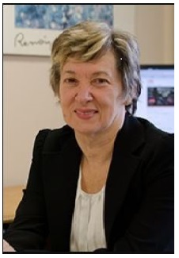

Prof.Branka Vucetic
Professor Branka Vucetic's work aims to develop theoretical framework and design principles for wireless communication systems. She is an internationally recognised expert in coding theory and its applications in wireless engineering. Professor Vucetic has held various research and academic positions in the UK, Yugoslavia and Australia, and since 1986 she has been with the School of Electrical and Information Engineering at Sydney University, where she is currently Laureate Professor and Director of the Centre of Excellence in Telecommunications.